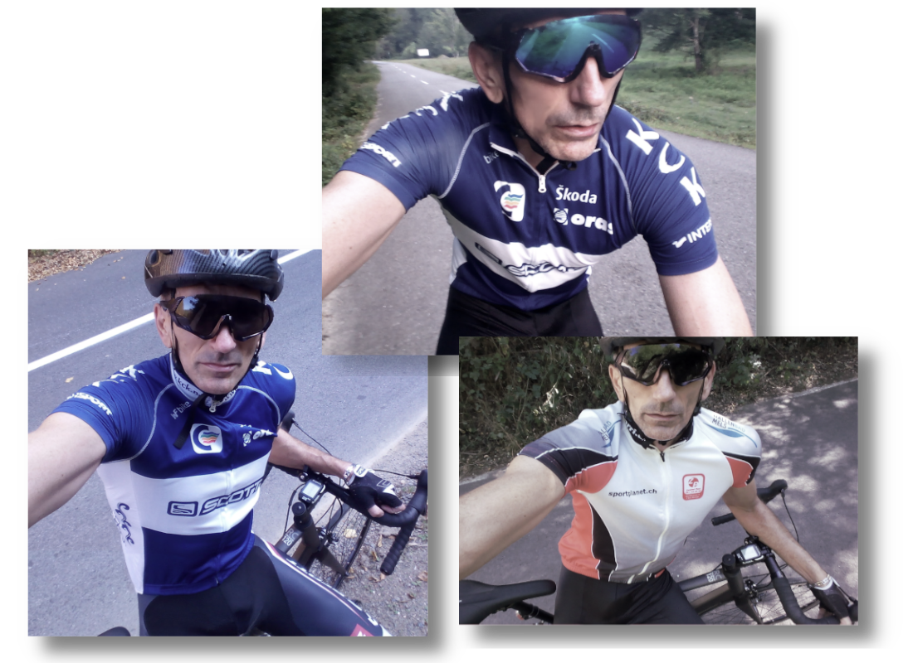

My cycling adventure
Below is my year in cycling from STRAVA.
It's not much. It's not a bit. It is a beginning.

In the summer of 2019 I discovered a new hobby of mine: cycling.
I always had a bike and I rode since I was a kid, but not at this level from the past few months.
I made new friends, who share the same passion for cycling, great people.
I learned new things, I was completely sweat, I enjoyed new emotions and challenges, I tested my physical limits, I fell off the bike, I rode in the rain being completely wet, I was burned by the sun, I admired beautiful new places, I went downhill with 80km/h, I was run away by dogs, I caught flies on my face, but all these were done out of passion and everytime when I ride my bike I enjoy every moment.
Cycling is a passion, an emotion, a sport and I love cycling.